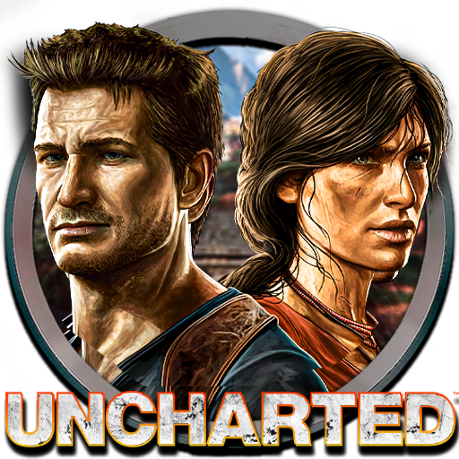

Uncharted é uma série de jogos de ação e aventura exclusiva para os consoles PlayStation. Os jogadores assumem o papel do carismático caçador de tesouros Nathan Drake, que embarca em expedições perigosas em busca de tesouros lendários. Os jogos são conhecidos por sua jogabilidade envolvente, gráficos impressionantes e narrativa cinematográfica.
As crianças ficaram empolgadas com as aventuras de Nathan Drake em Uncharted, enfrentando perigos, resolvendo enigmas e descobrindo tesouros ocultos.